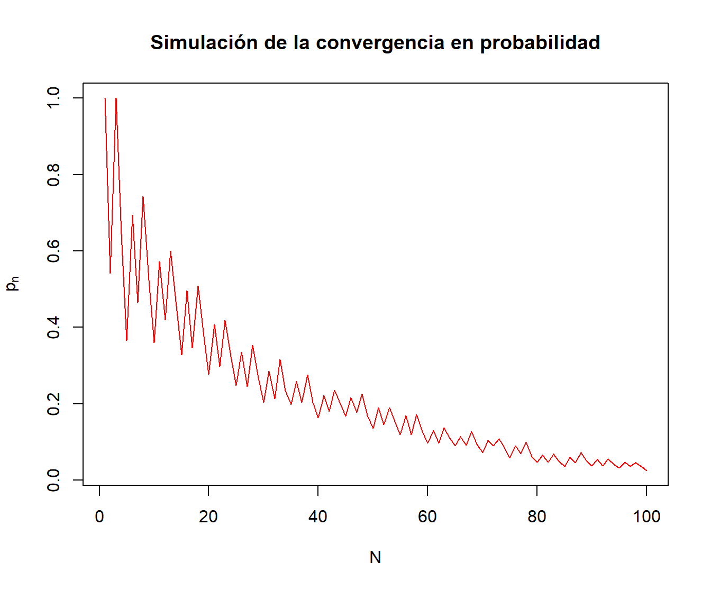
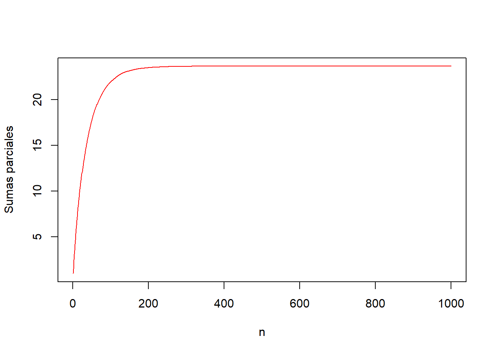
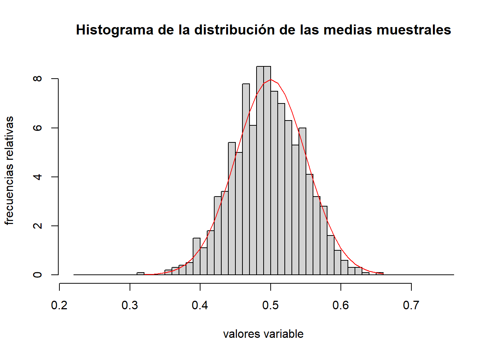

N=100
k=500
set.seed(2019)
## fijamos la semila de aleatoriedad
## por reproducibilidad
valores.experimento=matrix(sample(c(0,1),N*k,replace=TRUE),k,N)8 Ley de los grandes números y Teorema Central del Límite
8.1 Muestras aleatorias simples
El pilar básico sobre el que se sustenta la estadística inferencial es el concepto de muestra aleatoria simple.
Una muestra aleatoria simple, desde el punto de vista de la probabilidad es una distribución \(n\) variables aleatorias, \(X_1,\ldots, X_n\) todas independientes entre sí e idénticamente distribuidas ya que queremos simular la repetición de un experimento \(n\) veces de forma independiente.
Por tanto, estudiar una muestra aleatoria simple equivale a estudiar su distribución.
En muchos casos, nos bastará estudiar la distribución de una variable que “represente” a dicha muestra aleatoria simple: la media muestral definida como \(\overline{X}=\frac{X_1+\cdots + X_n}{n}\).
Las leyes de los grandes números nos dicen que, de alguna manera (que concretaremos más adelante), la media muestral y la media poblacional se “parecen” a la larga o cuando el número de repeticiones \(n\) tiende a infinito.
El Teorema Central del Límite nos dice que la distribución de la media muestral tiende, sea cual sea la distribución de las variables \(X_i\), a una normal. De ahí que la distribución normal sea la más importante en probabilidades y estadística.
8.1.1 La distribución de la media muestral
Vamos cómo se distribuye la media de un conjunto de variables normales e idénticamente distribuidas:
Demostración
Consideramos la variable aleatoria \(n\)-dimensional \(\mathbf{X}=(X_1,\ldots,X_n)\). Dicha variable tendrá la distribución normal \(n\)-dimensional con vector de medias \(\mathbf{\mu}=(\mu,\ldots,\mu)^\top\) y matriz de covarianzas \(\mathbf{\Sigma}\) diagonal ya que recordemos que las \(X_i\) son independientes y, por tanto, incorreladas o de covarianza nula: \[ \mathbf{\Sigma}=\begin{pmatrix} \sigma^2 & 0 & \ldots & 0 \\ 0 & \sigma^2 & \ldots & 0 \\ \vdots & \vdots & \vdots & \vdots \\ 0 & 0 & \ldots & \sigma^2 \end{pmatrix}. \]
Para hallar la variable \(\overline{X}\), realizamos la transformación afín siguiente: \[ \overline{X}=\left(\frac{1}{n},\ldots,\frac{1}{n}\right)\cdot\begin{pmatrix} X_1 \\ X_2\\\vdots \\ X_n \end{pmatrix}. \] Aplicando la proposición sobre la transformación afín sobre una variable normal \(n\)-dimensional que vimos en el capítulo de distribuciones \(n\)-dimensionales con matriz de cambio \(\mathbf{C}=\left(\frac{1}{n},\ldots,\frac{1}{n}\right)\) y \(\mathbf{c}=0\), tenemos que la distribución de \(\overline{X}\) será normal de media \(\mathbf{c}+\mathbf{C}\mathbf{\mu} = \mu\) y varianza (o matriz de covarianzas \(1\times 1\)): \[ \mathbf{C}\cdot\mathbf{\Sigma}\cdot\mathbf{C}^\top =\left(\frac{1}{n},\ldots,\frac{1}{n}\right)\cdot\begin{pmatrix} \sigma^2 & 0 & \ldots & 0 \\ 0 & \sigma^2 & \ldots & 0 \\ \vdots & \vdots & \vdots & \vdots \\ 0 & 0 & \ldots & \sigma^2 \end{pmatrix}\cdot \begin{pmatrix}\frac{1}{n}\\\frac{1}{n}\\\vdots\\\frac{1}{n}\end{pmatrix} =\frac{\sigma^2}{n}. \]
8.2 Convergencia de sucesiones de variables aleatorias
En esta sección vamos a intentar concretar cómo la media muestral y la media poblacional de una muestra aleatoria simple se van pareciendo, así como la distribución de la media muestral se va “acercando” a la normalidad.
Para ello, necesitamos introducir un conjunto de conceptos relacionados con la convergencia de variables aleatorias.
En primer lugar, introduciremos el concepto de sucesión de variables aleatorias:
Ejemplo: lanzamiento de un dado
Consideremos el experimento aleatorio de ir lanzando un dado no trucado. Definimos la variable aleatoria \(X_n\) como el resultado del dado el lanzamiento \(n\)-ésimo.
Entonces, la sucesión de variables aleatorias \(X_1,\ldots,X_n,\ldots\) es la asociada al lanzamiento del dado.¡Ojo! no confundir la sucesión de variables aleatorias \(X_1,\ldots,X_n,\ldots\) con la sucesión de resultados de dichas variables aleatorias \(x_1,\ldots, x_n,\ldots\). Lo primero correspondería a variables aleatorias con su función de probabilidad, esperanza, varianza, etc., y lo segundo sería simplemente una sucesión numérica de valores enteros entre 1 y 6.
8.2.1 Convergencia casi segura
Es decir, si el conjunto de elementos \(w\) del espacio muestral \(\Omega\) que cumplen que el límite de la sucesión de números reales \((X_n(w))_n\) tiende a \(X(w)\) tiene probabilidad \(1\).
De ahí viene el nombre de casi segura: el conjunto de valores \(w\) del espacio muestral tal que la sucesión numérica \((X_n(w))_n\) no converge a \(X(w)\) tiene probabilidad 0.
Comprobar la convergencia casi segura a partir de la definición puede ser muy complicado. Por suerte, existe la proposición siguiente que nos hace la vida más fácil:
Veamos si la sucesión \(\{X_n\}_{n=1}^\infty\) tiene convergencia casi segura hacia la variable \(X\) cuya función de probabilidad es:
| \(X\) | 1 | 2 | 3 | 4 | 5 | 6 |
|---|---|---|---|---|---|---|
| \(P_X\) | \(\frac{1}{6}\) | \(\frac{1}{6}\) | \(\frac{1}{6}\) | \(\frac{1}{6}\) | \(\frac{1}{6}\) | \(\frac{1}{6}\) |
En este caso el espacio muestral \(\Omega\) es \(\Omega=\{1,2,3,4,5,6\}\) y la función de probabilidad de cada \(X_i\) corresponde con la tabla anterior.
Seguidamente, de cara a aplica la proposición anterior, vamos a hallar la función de probabilidad de la variable \(D_n=X_n-X\). Los valores de la variable anterior son: \(D_n(\Omega)=\{-5,-4,-3,-2,-1,0,1,2,3,4,5\}\).
La función de probabilidad conjunta de la variable \((X_n,X)\) será al ser \(X_n\) y \(X\) independientes: \[ P_{X_nX}(x_n,x)=P_{X_n}(x_n)\cdot P_X(x)=\frac{1}{6}\cdot \frac{1}{6}=\frac{1}{36}, \] para todo \(x_n=1,2,3,4,5,6\) y para todo \(x=1,2,3,4,5,6\).
La función de probabilidad de la variable \(D_n\) será: \[ \scriptsize{ \begin{array}{rl} P_{D_n}(-5) & =P_{X_nX}(1,6)=\frac{1}{36}, \\ P_{D_n}(-4) & =P_{X_nX}(2,6)+P_{X_nX}(1,5)=\frac{2}{36}, \\ P_{D_n}(-3) & =P_{X_nX}(3,6)+P_{X_nX}(2,5)+P_{X_nX}(1,4)=\frac{3}{36}, \\ P_{D_n}(-2) & =P_{X_nX}(4,6)+P_{X_nX}(3,5)+P_{X_nX}(2,4)+P_{X_nX}(1,3)=\frac{4}{36}, \\ P_{D_n}(-1) & =P_{X_nX}(5,6)+P_{X_nX}(4,5)+P_{X_nX}(3,4)+P_{X_nX}(2,3)+P_{X_nX}(1,2)=\frac{5}{36}, \\ P_{D_n}(0) & =P_{X_nX}(6,6)+P_{X_nX}(5,5)+P_{X_nX}(4,4)+P_{X_nX}(3,3)+P_{X_nX}(2,2)+P_{X_nX}(1,1)=\frac{6}{36}, \\ P_{D_n}(1) & =P_{X_nX}(6,5)+P_{X_nX}(5,4)+P_{X_nX}(4,3)+P_{X_nX}(3,2)+P_{X_nX}(2,1)=\frac{5}{36}, \\ P_{D_n}(2) & =P_{X_nX}(6,4)+P_{X_nX}(5,3)+P_{X_nX}(4,2)+P_{X_nX}(3,1)=\frac{4}{36}, \\ P_{D_n}(3) & =P_{X_nX}(6,3)+P_{X_nX}(5,2)+P_{X_nX}(4,1)=\frac{3}{36}, \\ P_{D_n}(4) & =P_{X_nX}(6,2)+P_{X_nX}(5,1)=\frac{2}{36}, \\ P_{D_n}(5) & =P_{X_nX}(6,1)=\frac{1}{36}. \end{array} } \]
Sea \(\epsilon\) un valor real entre 0 y 1: \(0<\epsilon <1\). Entonces el suceso \(\{|D_n|>\epsilon\}\) será el complementario del suceso \(\{D_n=0\}\) ya que el único valor entre \(-5\) y \(5\) que no cumple \(|D_n|>\epsilon\) es el valor \(D_n=0\). Por tanto: \[ P(|D_n|>\epsilon)=1-P(D_n=0)=1-P_{D_n}(0)=1-\frac{1}{6}=\frac{5}{6}. \] La serie \(\sum\limits_{n=1}^\infty \frac{5}{6}\) no es convergente de forma obvia. Por tanto, deducimos que la sucesión \(\{X_n\}_{n=1}^\infty\) no converge casi seguramente hacia la variable \(X\).
8.2.2 Convergencia en probabilidad
El límite de la probabilidad de los sucesos formados por los \(w\in\Omega\) tal que \(|X_n(w)-X(w)|>\epsilon\) vale 0.
El siguiente resultado nos puede ayudar algunas veces a comprobar la convergencia en probabilidad:
Demostración
Usando la desigualdad de Chebyschev, podemos escribir: \[ P(|X_n-\mu_n|>\epsilon \}) \leq \frac{\sigma_n^2}{\epsilon^2}. \] Tomando límite a cada parte de la desigualdad anterior tenemos: \[ 0\leq \lim_{n\to\infty} P(|X_n-X|>\epsilon \}) \leq \lim_{n\to\infty}\frac{\sigma_n^2}{\epsilon^2}=0, \] de donde deducimos que \(\lim_{n\to\infty} P(|X_n-X|>\epsilon \})=0\), tal como queríamos ver.
Ejemplo del lanzamiento de un dado (continuación)
En el ejemplo anterior del lanzamiento de un dado, no hay convergencia en probabilidad ya que comprobamos que para \(0<\epsilon<1\),
\[ P(|X_n-X|>\epsilon)=\frac{5}{6}. \] Por tanto, para \(0<\epsilon<1\), \(\lim_{n\to\infty} P(|X_n-X|>\epsilon \})=\frac{5}{6}\neq 0.\)
Ejemplo: covergencia en probabilidad distribucione exponenciales
Consideremos las variables aleatorias \(X_n\) con función de densidad: \[ f_{X_n}(x)=\begin{cases} \lambda\cdot n\cdot\mathrm{e}^{-\lambda\cdot n\cdot x}, & \mbox{si }x>0,\\ 0, & \mbox{en caso contrario.} \end{cases} \] Estas variables \(X_n\) tienen distribución exponencial de parámetro \(\lambda\cdot n\).
Veamos que \(\{X_n\}_{n=1}^\infty\stackrel{c.p}{\longrightarrow} 0\).
Dado \(\epsilon >0\), calculemos \(P(|X_n|>\epsilon \})\): \[ P(|X_n|>\epsilon \}) = \int_\epsilon^\infty \lambda\cdot n\cdot \mathrm{e}^{-\lambda\cdot n x}\, dx =\lambda\cdot n\cdot \left[\frac{1}{-\lambda \cdot n}\cdot\mathrm{e}^{-\lambda\cdot n\cdot x}\right]_\epsilon^\infty =\mathrm{e}^{-\lambda\cdot n\cdot \epsilon}\stackrel{n\to\infty}{\longrightarrow} 0, \] tal como queríamos ver.
8.2.3 Convergencia en ley o en distribución
Lo denotaremos por \(X_n\stackrel{{\cal L}}{\longrightarrow}X\).
El resultado siguiente simplifica algunas veces comprobar que la sucesión \(X_n\) converge en ley hacia \(X\):
Ejemplo de la distribución binomial \(B(n,p)\)
Veamos que si \(X_n=B(n,p_n)\) tiene distribución binomial de parámetros \(n\) y \(p_n\), con \(p_n=\frac{\lambda}{n}\), con \(\lambda\) fijo, \[ B(n,p)\stackrel{{\cal L}}{\longrightarrow}Poiss(\lambda). \]En el tema de distribuciones notables demostramos que para todo \(k\in\{0,\ldots,n\}\), \[ P(X_n = k)=\binom{n}{k}\cdot p_n^k\cdot (1-p_n)^{n-k}\stackrel{n\to\infty}{\longrightarrow} P(X=k)=\frac{\lambda^k}{k!}\cdot\mathrm{e}^{-\lambda}. \] Entonces tenemos que dado \(x\in\mathbb{R}\), existe \(k\in\{0,\ldots,n\}\), tal que \(k\leq x< k+1\). Por tanto, \[ \begin{array}{rl} \lim\limits_{n\to\infty} F_{X_n}(x) & = \lim\limits_{n\to\infty} F_{X_n}(k)=\lim\limits_{n\to\infty} P(X_n=0)+\cdots + P(X_n=k) \\ & =\lim\limits_{n\to\infty} P(X_n=0)+\cdots + \lim\limits_{n\to\infty} P(X_n=k)\\ & = P(X=0)+\cdots + P(X=k)\\ & =F_X(k)=F_X(x), \end{array} \] tal como queríamos demostrar.
8.2.4 Relaciones entre las distintas convergencias
El resultado siguiente nos dice cuando un tipo de convergencia implica la otra:
Si \(X_n\stackrel{c.s.}{\longrightarrow} X\), entonces \(X_n\stackrel{c.p.}{\longrightarrow} X\).
Si \(X_n\stackrel{c.p.}{\longrightarrow} X\), entonces \(X_n\stackrel{{\cal L}}{\longrightarrow} X\).
En resumen, la convergencia más fuerte es la casi segura, luego vendría la convergencia en probabilidad y, por último, la convergencia en ley:
\[ \mbox{Conv. casi segura }\Rightarrow \mbox{ Conv. en probabilidad }\Rightarrow\mbox{ Conv. en ley.} \]
8.3 Leyes de los grandes números
Como ya comentamos al principio del tema, las leyes de los grandes números estudian el comportamiento de la media muestral \(\overline{X}_n\) cuando la sucesión de variables aleatorias \(\{X_n\}_{n=1}^\infty\) se va hacia infinito.
Más concretamente, diremos que una sucesión de variables aleatorias \(\{X_n\}_{n=1}^\infty\) cumple una ley de los grandes números si existe un sucesión numérica \((a_n)_n\) tal que la sucesión de variables aleatorias \(\{\overline{X}_n-a_n\}\) converge “de alguna manera” de las que hemos visto hacia 0.
Si este “alguna manera” es la convergencia más fuerte, o la casi segura, tendremos la ley fuerte de los grandes números.
En cambio, si la convergencia es en probabilidad, tendremos la ley débil de los grandes números.
8.3.1 Leyes débiles de los grandes números
Dicho en otras palabras: en las condiciones de la proposición anterior, la diferencia entre la sucesión de medias muestrales como variables aleatorias y la sucesión numérica de la medias poblacionales de dichas variables aleatorias tiende en probabilidad hacia 0.
Demostración
Como las variables son independientes dos a dos la varianza de la suma es la suma de las varianzas: \[ \mathrm{Var}(\overline{X}_n)=\frac{1}{n^2}\mathrm{Var}(\sum_{i=1}^n X_i)=\frac{1}{n^2}\sum_{i=1}^n \sigma_i^2, \] donde \(\sigma_i^2 = \mathrm{Var}(X_i)\).
Sabemos por hipótesis que existe una constante \(M\) tal que \(\sigma_i^2\leq M\) para todo \(i\). Por tanto, \[ \mathrm{Var}(\overline{X}_n)=\frac{1}{n^2}\sum_{i=1}^n \sigma_i^2\leq \frac{1}{n^2}Mn =\frac{M}{n}. \]
El valor del valor medio de la media muestral será: \[ E(\overline{X}_n)=\frac{1}{n}\sum_{i=1}^n E(X_i)=\frac{1}{n}\sum_{i=1}^n \mu_i. \] Usando la desigualdad de Chebyschev, deducimos, dado un \(\epsilon >0\): \[ P\left(\left|\overline{X}_n-\frac{1}{n}\sum_{i=1}^n \mu_i\right|>\epsilon\right) \leq \frac{\mathrm{Var}(\overline{X}_n)}{\epsilon^2}\leq \frac{M}{n\epsilon^2}. \] Por tanto, tomando límites en las dos partes de la desigualdad anterior, deducimos \[ \lim_{n\to \infty}P\left(\left|\overline{X}_n-\frac{1}{n}\sum_{i=1}^n \mu_i\right|>\epsilon\right) =0, \] tal como queríamos ver.
Del teorema anterior obtenemos las consecuencias siguientes:
Demostración
En este caso tenemos que \(\mu_i=\mu\) y, por tanto, \(\frac{1}{n}\sum\limits_{i=1}^n \mu_i =\frac{1}{n}\cdot n\mu=\mu\). Si aplicamos el teorema de la ley débil de los grandes números nos sale el resultado enunciado.
Demostración
Trivial a partir del Corolario anterior.
Ejemplo: lanzamiento de una moneda
Vamos a simular la ley débil de los grandes números en el caso en que el experimento aleatorio sea el lanzamiento de una moneda.
En este caso, tendremos que las variables aleatorias \(X_n\) tendrán distribución de Bernoulli de parámetro \(p=\frac{1}{2}\).
La variable \(\overline{X}_n\) representa la proporción de caras (\(X_n=1\)) en el lanzamiento de la moneda \(n\) veces. Nos preguntamos si dicha proporción de caras tiende al parámetro \(p\) en probabilidad.
Vamos a hallar una muestra para cada variable \(\overline{X}_n=\frac{\sum\limits_{i=1}^n X_i}{n}\).
Para ello, vamos a repetir el experimento de lanzar la moneda \(N=100\) veces y lo repetimos \(k=500\) ocasiones.
Los resultados estarán en una matriz \(k\times N =500\times 100\) donde cada fila de la matriz simulará una repetición del experimento de lanzar la moneda \(N=100\) veces.
Dada la fila \(i\)-ésima, iremos calculando \(\overline{X}_1^{(i)},\overline{X}_2^{(i)},\ldots,\overline{X}_{N=100}^{(i)}\).
Luego, fijado un \(\epsilon\), para cada \(n\), aproximaremos la probabilidad \(P\left(\left|\overline{X}_n-\frac{1}{2}\right|>\epsilon\right)\) usando la fórmula de Laplace: \[ p_n=P\left(\left|\overline{X}_n-\frac{1}{2}\right|>\epsilon\right) \approx\frac{\#\left\{\mbox{$i$ tal que $\left|\overline{X}_n^{(i)}-\frac{1}{2}\right|>\epsilon$}\right\}}{k}. \]
Para comprobar dicha afirmación, la idea es hallar para cada valor \(n\), una muestra para cada variable \(\overline{X}_n=\frac{\sum\limits_{i=1}^n X_i}{n}\).
Para hallar una muestra de cada variable \(\overline{X}_n\), seguimos los pasos siguientes:
- En primer lugar, simulamos la repetición del experimento de lanzar la moneda \(N=100\) veces y lo repetimos \(k=500\) ocasiones. Los resultados estarán en una matriz \(k\times N =500\times 100\) donde cada fila de la matriz simulará una repetición del experimento de lanzar la moneda \(N=100\) veces:
Los primeros resultados son:
[,1] [,2] [,3] [,4] [,5] [,6] [,7] [,8] [,9] [,10] [,11] [,12]
[1,] 0 1 1 1 1 1 1 0 1 1 0 0
[2,] 0 0 0 0 0 1 0 1 1 0 1 1
[3,] 1 1 1 0 0 1 1 0 0 1 0 1
[4,] 0 0 1 1 1 0 0 0 1 1 0 1
[5,] 0 1 1 1 1 1 0 1 0 1 1 1…
- En segundo lugar, dada la fila \(i\)-ésima de la matriz anterior, iremos calculando \(\overline{X}_1^{(i)},\overline{X}_2^{(i)},\ldots,\overline{X}_{N=100}^{(i)}\) guardando los resultados en una matriz de medias muestrales. Antes de nada, creamos la función que nos realizará la operación anterior dado un vector cualquiera
x:
cálculo.xnbarra = function(x){
return(cumsum(x)/(1:length(x)))
}A partir de la matriz de los resultados, aplicamos la función anterior a cada fila y hallaremos una matriz con todas las \(\overline{X}_n^{(i)}\):
matriz.medias.muestrales = t(apply(valores.experimento,
1,cálculo.xnbarra))La columna \(j\)-ésima de la matriz matriz.medias.muestrales contiene una muestra de \(k=500\) valores de la variable \(\overline{X}_j\).
- En último lugar, fijado un \(\epsilon\), para cada \(n\), aproximaremos la probabilidad \(P\left(\left|\overline{X}_n-\frac{1}{2}\right|>\epsilon\right)\) usando la fórmula de Laplace: \[
p_n=P\left(\left|\overline{X}_n-\frac{1}{2}\right|>\epsilon\right) \approx\frac{\#\left\{\mbox{$i$ tal que $\left|\overline{X}_n^{(i)}-\frac{1}{2}\right|>\epsilon$}\right\}}{k}.
\] La columna \(j\)-ésima de la matriz
matriz.medias.muestraleses una muestra de la variable \(\overline{X}_j\). Por tanto, para hallar la aproximación de \(p_n\), miramos cuántos valores de la columna \(j\)-ésima de la matriz anterior verifican \(\left|\overline{X}_j^{l}-\frac{1}{2}\right|>\epsilon\), para \(l=1,\ldots, k\):
epsilon=0.1
probabilidades.pn= colSums(abs(matriz.medias.muestrales-0.5) > epsilon)/kPara ver los resultados, dibujamos el gráfico \(n\) vs. \(p_n\):

Observamos que las probabilidades tienden a cero tal como nos dice el Teorema de la ley débil de los grandes números.
8.3.2 Convergencia de los momentos muestrales
´Dada una sucesión de variables aleatorias, definimos los momentos muestrales de la forma siguiente:
Dada \(\{X_n\}_{n=1}^\infty\) una sucesión de variables aleatorias y \(k\) un valor entero positivo, en el tema de Complementos de variables aleatorias, definimos los momentos y los momentos centrales de orden \(k\) para cada de dichas variables como: \[ m_k^{(n)} = E\left(X_n^k\right),\quad\mu_k^{(n)}=E\left(\left(X_n-\mu_n\right)^k\right), \] donde \(\mu_n\) es el valor medio de la variable \(X_n\): \(\mu_n = E(X_n)\).
Así mismo, dada \(\{(X_n,Y_n)\}_{n=1}^\infty\) una sucesión de variables aleatorias bidimensionales, en el tema de variables aleatorias bidimensionales definimos para cada variable \((X_n,Y_n)\) la covarianza \(\sigma_{X_nY_n}\) y el coeficiente de correlación \(\rho_{X_nY_n}\): \[ \sigma_{X_nY_n}=E((X_n-\mu_{X_n})(Y_n-\mu_{Y_n})),\quad \rho_{X_nY_n}=\frac{\sigma_{X_nY_n}}{\sqrt{\sigma_{X_n}^2\sigma_{Y_n}^2}}. \]
Dada una sucesión de variables aleatorias \(\{X_n\}_{n=1}^\infty\), el resultado siguiente nos relaciona los momentos muestrales y los momentos muestrales centrados en la media con los momentos y los momentos centrales de cada variable:
Demostración
Consideremos la sucesión de variables aleatorias \(\{X_n^k\}_{n=1}^\infty\). Como las variables aleatorias de la sucesión \(\{X_n\}_{n=1}^\infty\) son independientes dos a dos e idénticamente distribuidas, las variables de la sucesión \(\{X_n^k\}_{n=1}^\infty\) también lo serán.
La idea es aplicar la ley débil de los grandes números a la sucesión anterior.
El valor medio de cada variable de la sucesión \(\{X_n^k\}_{n=1}^\infty\) será: \(\tilde{\mu}_n^{(k)}= E(X_n^{k})=m_k\) el momento de orden \(k\).
Entonces, si hacemos \(\frac{1}{n}\sum\limits_{i=1}^n \tilde{\mu}_n^{(k)}\) obtenemos: \(\frac{1}{n} n\cdot m_k=m_k.\)
Aplicando la ley débil de los grandes números a la sucesión \(\{X_n^k\}_{n=1}^\infty\), tendremos que \[ \overline{X^k}_n \stackrel{c.p.}{\longrightarrow}m_k, \] pero \(\overline{X^k}_n\) vale: \[ \overline{X^k}_n=\frac{1}{n}\sum_{i=1}^n X_i^k, \] variable aleatoria que coincide con el momento muestral de orden \(k\), \(M_n^{(k)}\), tal como queríamos demostrar.
Dejamos como ejercicio la demostración de los momentos centrales. Razonando de la misma manera, no tiene dificultad alguna.
Enunciemos ahora el resultado para las covarianzas y las correlaciones muestrales:
Demostración
Para la demostración basta aplicar la ley débil de los grandes números a las sucesiones \(\{S_{X_n,Y_n}\}_{n=1}^\infty\) y \(\{R_{X_nY_n}\}_{n=1}^\infty\). Dejamos los detalles como ejercicio.
8.3.3 Leyes fuertes de los grandes números
Vamos a dar una versión de la ley débil de los grandes números pero en lugar de tener convergencia en probabilidad, tendremos convergencia casi segura.
Asociados al resultado anterior tenemos los corolarios siguientes:
Demostración
Si \(\sigma_n^2\leq M\) para todo \(n\), la serie numérica \(\sum\limits_{n=1}^\infty \frac{\sigma_n^2}{n^2}\) será convergente ya que, por el criterio de acotación, \[ \sum\limits_{n=1}^\infty \frac{\sigma_n^2}{n^2}\leq M\sum\limits_{n=1}^\infty \frac{1}{n^2}, \] que es convergente.
Entonces aplicando el Teorema de Kolmogorov o la ley fuerte de los grandes números, tenemos el resultado.
Demostración
En este caso: \[ \frac{1}{n}\sum_{i=1}^n \mu_i = \frac{1}{n}\cdot n\cdot p=p. \] También se verifica que \(\sigma_n^2 =p(1-p)\). Por tanto, existe una constante \(M\) (\(M=p(1-p)\)) tal que \(\sigma_n^2\leq M\). Aplicando el Corolario anterior, obtenemos el resultado.
Ejemplo: lanzamiento moneda (continuación)
Vamos a repetir el ejemplo de las variables aleatorias de Bernoulli \(X_n\), todas de parámetro \(p=\frac{1}{2}\) y comprobar que las proporciones de caras cuando lanzamos la moneda \(n\) veces, es decir, las medias muestrales \(\overline{X}_n\) tienden casi seguramente hacia \(p=\frac{1}{2}\).
La comprobación anterior es equivalente a ver que la serie: \[ \sum_{n=1}^\infty P(|\overline{X}_n-p|>\epsilon), \] es convergente fijado \(\epsilon >0\).
Recordemos que en la variable probabilidades.pn calculábamos las probabilidades \(P(|\overline{X}_n-p|>\epsilon)\) para un \(\epsilon =0.1\).
Comprobar que la serie anterior es convergente es equivalente a comprobar que las sumas parciales convergen:
cumsum(probabilidades.pn)El problema es que la n y la N escogidas son demasiado pequeñas. Para realizar el experimento actual tenéis que considerar n=1000 y N=5000. Id con cuidado que el programa os tardará un rato.
El gráfico de las sumas parciales se muestra a continuación:
N=1000
plot(1:N,cumsum(probabilidades.pn),xlab=expression(n),
ylab="Sumas parciales",col='red', type='l')
Como se puede observar, la serie parece que converge.
8.4 Teorema Central del Límite
Sabemos que si una sucesión \(\{X_n\}\) está formada por variables normales, la sucesión de medias muestrales \(\left\{\overline{X}_n=\frac{\sum\limits_{i=1}^n X_i}{n}\right\}_{n=1}^\infty\) también son normales ya que vimos en el tema de variables multidimensionales que si aplicamos una transformación afín (y, en particular, lineal) a una variable normal multidimensional, el resultado es una normal.
Para calcular la variable \(\overline{X}_n\), es obvio que la transformación lineal es la siguiente: \[ \overline{X}_n = \left(\frac{1}{n},\ldots,\frac{1}{n}\right)\cdot \begin{pmatrix}X_1 \\\vdots\\ X_n\end{pmatrix}. \] Si además la sucesión de variables \(X_n\) son normales todas con media \(\mu\) y varianza \(\sigma^2\), la sucesión \(\left\{\overline{X}_n\right\}_{n=1}^\infty\) serán normales de media \(\mu\) y varianza \(\frac{\sigma^2}{n}\).
Estandarizando las variables anteriores, podemos concluir que las variables medias estandarizadas \(Z_n =\left\{\frac{\overline{X}_n-\mu}{\frac{\sigma}{\sqrt{n}}}\right\}_{n=1}^\infty\) todas son \(N(0,1)\).
El Teorema Central del Límite generaliza el resultado anterior en el sentido de que si las variables \(X_n\) no tienen por qué tener la distribución normal pero son independientes e idénticamente distribuidas, las variables \(Z_n\) correspondientes tienden en ley a una distribución normal estándar \(N(0,1)\).
En general, se dice que los valores medios de cualquier secuencia de números aproximadamente corresponde a una muestra de una normal.
8.4.1 Teorema Central del Límite
Para la demostración, usaremos dos propiedades de la función característica:
Demostración de la proposición
Por definición: \[ \begin{array}{rl} \phi_{S_n}(w) & =E\left(\mathrm{e}^{\mathrm{i} w S_n}\right)=E\left(\mathrm{e}^{\mathrm{i} w \sum\limits_{i=1}^n Y_i}\right) = E\left(\mathrm{e}^{i w Y_1}\cdots \mathrm{e}^{i w Y_n}\right)\\ & \stackrel{\mbox{$Y_1,\ldots,Y_n$ son independientes}}{=} E\left(\mathrm{e}^{i w Y_1}\right)\cdots E\left(\mathrm{e}^{i w Y_n}\right) \\ & =\phi_{Y_1}(w)\cdots \phi_{Y_n}(w). \end{array} \]
Demostración de la proposición
Por definición: \[ \phi_{U}(w)=E\left(\mathrm{e}^{\mathrm{i} w U}\right) = E\left(\mathrm{e}^{\mathrm{i} w k Y}\right)=\phi_Y(kw). \]
Demostración del Teorema Central del Límite
Usando la proposición que vimos al introducir la convergencia en ley que dice que una sucesión \(\{X_n\}\) converge en ley hacia \(X\) si, y sólo si, \(\lim\limits_{\phi_{X_n}(t)}=\phi_{X}(t)\), donde \(\phi\) representa la función característica y la condición anterior tiene que verificarse para todo valor \(t\in\mathbb{R}\), basta demostrar que, si tomamos \(Z_n = \frac{\sum\limits_{i=1}^n X_i-n\mu}{\sigma\sqrt{n}},\)
\[ \lim_{n\to \infty}\phi_{Z_n}(w)=\phi_Z(w), \] para cualquier valor \(w\in\mathbb{R}\), siendo \(Z=N(0,1)\).
Seguidamente, simplifiquemos la expresión \(\phi_{Z_n}(w)=\phi_{\frac{\sum\limits_{i=1}^n X_i-n\mu}{\sigma\sqrt{n}}}(w)\) usando las dos proposiciones anteriores. En primer lugar, teniendo en cuenta que las variables \(\left\{\frac{X_i-\mu}{\sigma\sqrt{n}}\right\}\) son independientes e idénticamente distribuidas, usando la primera proposición podemos escribir: \[ \phi_{Z_n}(w) = \left(\phi_{\frac{X-\mu}{\sigma\sqrt{n}}}(w)\right)^n, \] donde \(X\) representa cualquiera de las variables \(X_i\).
Usando la segunda proposición, podemos simplificar la expresión anterior aún más: \[ \phi_{Z_n}(w) = \left(\phi_{\frac{X-\mu}{\sigma\sqrt{n}}}(w)\right)^n = \left(\phi_{X-\mu}\left(\frac{w}{\sigma\sqrt{n}}\right)\right)^n. \]
Si desarrollamos por Taylor alrededor del valor \(\hat{w}=0\) la función característica \(\phi_{X-\mu}\left(\hat{w}\right)\) hasta segundo orden, obtenemos: \[ \scriptsize{ \phi_{X-\mu}\left(\hat{w}\right) = \phi_{X-\mu}\left(0\right)+ \phi_{X-\mu}'\left(0\right) \hat{w}+ \phi_{X-\mu}''\left(0\right)\frac{\hat{w}^2}{2}+O(\hat{w}^3), } \] donde \(O(\hat{w}^3)\) simboliza los términos de orden \(\hat{w}^3\) y superiores.
Los valores \(\phi_{X-\mu}\left(0\right)\), \(\phi_{X-\mu}'\left(0\right)\) y \(\phi_{X-\mu}''\left(0\right)\) valen: (ver tema de Complementos de variables aleatorias)
\[ \scriptsize{ \phi_{X-\mu}\left(0\right)=1, \ \phi_{X-\mu}'\left(0\right)=\frac{1}{\mathrm{i}}E(X-\mu)=0,\ \phi_{X-\mu}''\left(0\right)=\frac{1}{\mathrm{i}^2}E\left((X-\mu)^2\right)=-\sigma^2. } \] El desarrollo anterior será: \[ \phi_{X-\mu}\left(\hat{w}\right) =1 - \frac{1}{2}\hat{w}^2\sigma^2+O(\hat{w}^3), \]
Aplicando la expresión anterior para \(\hat{w}=\frac{w}{\sigma\sqrt{n}}\), obtenemos:
\[ \scriptsize{ \phi_{X-\mu}\left(\frac{w}{\sigma\sqrt{n}}\right) =1 - \frac{1}{2}\left(\frac{w}{\sigma\sqrt{n}}\right)^2\sigma^2+O\left(\frac{w}{\sigma\sqrt{n}}\right)^3= 1-\frac{w^2}{2n}+O\left(\frac{w^3}{n^{\frac{3}{2}}}\right), } \]
La función característica de la variable \(Z_n\) será usando la expresión anterior: \[ \scriptsize{\phi_{Z_n}(w)=\left(\phi_{X-\mu}\left(\frac{w}{\sigma\sqrt{n}}\right)\right)^n = \left(1-\frac{w^2}{2n}+O\left(\frac{w^3}{n^{\frac{3}{2}}}\right)\right)^n} \] El objetivo es calcular el límite de la expresión anterior: \[ \lim_{n\to \infty}\phi_{Z_n}(w) = \lim_{n\to\infty} \left(1-\frac{w^2}{2n}+O\left(\frac{w^3}{n^{\frac{3}{2}}}\right)\right)^n = \lim_{n\to \infty}\mathrm{e}^{n\cdot \ln \left(1-\frac{w^2}{2n}+O\left(\frac{w^3}{n^{\frac{3}{2}}}\right)\right)}. \]
Usando que para \(z\approx 0\), \(\ln(1-z)=z+O(z^2)\), el límite anterior será: \[ \lim_{n\to \infty}\phi_{Z_n}(w) = \lim_{n\to \infty}\mathrm{e}^{n\cdot \left(-\frac{w^2}{2n}+O\left(\frac{w^4}{n^{2}}\right)\right)} = \lim_{n\to \infty}\mathrm{e}^{ \left(-\frac{w^2}{2}+O\left(\frac{w^4}{n}\right)\right)} = \mathrm{e}^{-\frac{w^2}{2}}, \] y dicha expresión coincide con la función característica de la variable \(N(0,1)\), \(\phi_{Z}(w)\).
Recordad que en el tema de Complementos de variables aleatorias vimos que si la variable \(U\) era \(N(\mu,\sigma)\), \(\phi_{U}(w)=\mathrm{e}^{\mathrm{i}w\mu-\frac{w^2\sigma^2}{2}}\). Aplicando la fórmula anterior para \(\mu=0\) y \(\sigma=1\), obtenemos \(\phi_{Z}(w)=\mathrm{e}^{-\frac{w^2}{2}}.\)
8.4.2 Teorema Central del Límite en la práctica
El Teorema Central del Límite se aplica a la práctica en la forma siguiente:
Sea \(\{X_n\}_{n=1}^\infty\) una sucesión de variables aleatorias independientes e idénticamente distribuidas con \(E(X_i)=\mu\) y \(\mathrm{Var}(X_i)=\sigma^2\). Entonces, podemos aproximar para \(n\) grande (\(n\geq 30\)), la media muestral \(\overline{X}_n\) por: \[ \overline{X}_n =\frac{1}{n}\sum_{i=1}^n X_i \approx N\left(\mu,\frac{\sigma}{\sqrt{n}}\right), \] o también: \[ \sum_{i=1}^n X_i \approx N\left(n\mu,\sigma\sqrt{n}\right), \]
Las aproximaciones anteriores se pueden obtener teniendo en cuenta que el Teorema Central del Límite nos dice que la variable \(Z_n= \frac{\sum\limits_{i=1}^n X_i-n\mu}{\sigma\sqrt{n}}\) es aproximadamente una \(N(0,1)\). Por tanto, \[ \frac{\sum\limits_{i=1}^n X_i-n\mu}{\sigma\sqrt{n}} \approx N(0,1),\ \Rightarrow \sum_{i=1}^n X_i\approx \sigma\sqrt{n}\cdot N(0,1)+n\mu = N\left(n\mu,\sigma\sqrt{n}\right). \]
Dividiendo por \(n\) la aproximación anterior, obtenemos: \[ \overline{X}_n =\frac{1}{n}\sum_{i=1}^n X_i \approx \frac{1}{n}N\left(n\mu,\sigma\sqrt{n}\right) =N\left(\mu,\frac{\sigma}{\sqrt{n}}\right). \]
8.4.3 Teorema de Moivre-Laplace
Si aplicamos el Teorema Central del Límite en el caso en que las variables \(X_n\) son de Bernoulli de parámetro \(p\), obtenemos el llamado Teorema de Moivre-Laplace:
En la práctica, decimos que podemos aproximar una variable binomial de parámetros \(n\) y \(p\) por una distribución normal de parámetros \(\mu=np\) y \(\sigma =\sqrt{n\cdot p\cdot (1-p)}\): \[ B(n,p)\approx N(np,\sqrt{n\cdot p\cdot (1-p)}). \]
8.4.4 Aproximación de una suma de variables Poisson
Si aplicamos el Teorema Central del Límite en el caso en que las variables \(X_n\) son de Poisson de parámetro \(\lambda\), obtenemos el resultado siguiente:
Antes de ver la aplicación práctica del resultado anterior, veamos que suma de variables Poisson independientes de parámetro \(\lambda\) es una variable Poisson de parámetro \(n\lambda\):
Demostración
En primer lugar, hallemos la función característica de la distribución de Poisson de parámetro \(\lambda\). Sea \(X=Poiss(\lambda)\). Su función característica en un valor \(w\) será: \[ \scriptsize{ \phi_X(w)=E\left(\mathrm{e}^{\mathrm{i} w X}\right)=\sum_{k=0}^\infty \mathrm{e}^{i w k}\frac{\lambda^k}{k!}\mathrm{e}^{-\lambda}=\mathrm{e}^{-\lambda} \sum_{k=0}^\infty \frac{\left(\lambda\mathrm{e}^{iw}\right)^k}{k!}=\mathrm{e}^{-\lambda}\cdot \mathrm{e}^{\lambda\mathrm{e}^{iw}}=\mathrm{e}^{\lambda \left(\mathrm{e}^{iw}-1\right)}. } \] Sea ahora la variable \(S_n=\sum\limits_{i=1}^n X_i\). Usando la proposición anterior que nos calcula la función característica de sumas de variables independientes, podemos escribir: \[ \phi_{S_n}(w)=\phi_{X_1}(w)\cdots \phi_{X_n}(w)=\left(\mathrm{e}^{\lambda \left(\mathrm{e}^{iw}-1\right)}\right)^n =\mathrm{e}^{n\lambda \left(\mathrm{e}^{iw}-1\right)}, \] función característica que corresponde a una variable de Poisson de parámetro \(n\lambda\), \(Poiss(n\lambda)\).
Usando la proposición anterior, tenemos que la suma de variables Poisson independientes de parámetro \(\lambda\) sigue una distribución Poisson de parámetro \(n\lambda\). Por tanto, podemos escribir usando el corolario del Teorema Central del Límite aplicado a variables Poisson: \[ Poiss(n\lambda)\approx N(n\lambda,\sqrt{n\lambda}). \]
Ejemplo: aplicación del Teorema de Moivre-Laplace
Sea \(X\) una distribución binomial de parámetros \(n=50\) y \(p=\frac{1}{3}\).
Queremos conocer \(P(X < 15)\) y \(P(10\leq X\leq 20)\).
Vamos a calcular las probabilidades anteriores usando el Teorema de Moivre-Laplace.
La variable \(X\) es aproximadamente una distribución normal \(X_N\) de parámetros \(\mu = np=\frac{50}{3}=16.6667\) y \(\sigma=\sqrt{50\cdot\frac{1}{3}\cdot \frac{2}{3}}=3.3333\).
Por tanto: \[ \begin{array}{rl} P(X< 15) & = P(X\leq 14) \approx P(X_N \leq 14)=P\left(Z\leq \frac{14-16.6667}{3.3333}\right)\\& =P(Z\leq -0.8) = 0.2119,\\ \end{array} \] \[ \begin{array}{rl} P(10\leq X\leq 20) & \approx P(10\leq X_N \leq 20) = P\left(\frac{10-16.6667}{3.3333}\leq Z\leq \frac{20-16.6667}{3.3333}\right) \\ & = P(-2\leq Z\leq 1) \\ & = P(Z\leq 1)-P(Z\leq -2)=0.8413447-0.0227501 = 0.8186, \end{array} \] donde \(Z=N(0,1)\).
Comparemos los valores aproximados anteriores con los valores “exactos” proporcionados por R:
pbinom(14,50,1/3)[1] 0.2612386pbinom(20,50,1/3)-pbinom(9,50,1/3)[1] 0.8613685Tenemos errores de 0.04938 y 0.04277, respectivamente.
Aunque \(n\) no es pequeño, \(n=50\), los errores anteriores no son demasiado pequeños.
Una razón por la que dichos errores no son pequeños es que aproximamos una distribución discreta (Binomial) cuyos valores van de 1 en 1 por una distribución normal, que es continua.
La corrección de continuidad de Fisher nos mejora la aproximación disminuyendo dichos errores.
8.4.5 Corrección de continuidad de Fisher
Cuando aplicamos el Teorema Central del Límite y aproximamos una distribución discreta que tiene valores enteros por una normal, hemos de aplicar lo que se llama corrección de continuidad de Fisher.
Sea \(X\) la variable discreta que queremos aproximar y \(X_N\) la variable normal que nos aparece cuando aplicamos el Teorema Central del Límite. Supongamos que queremos calcular \(P(X\leq k)\), para un \(k\) entero. Entonces debemos hacer: \[ P(X\leq k)\approx P(X_N\leq k+0.5). \]
Es decir, para tener en cuenta el valor \(k\) en la aproximación \(X_N\) hay que sumarle la mitad entre dos valores consecutivos (0.5 si los valores son enteros) de la variable \(X\).
Id con cuidado, si queremos calcular \(P(X<k)\), hay que hacer \(P(X<k) =P(X\leq k-1)\approx P(X_N \leq k-1+0.5)=P(X_N\leq k-0.5)\).
Ejemplo: continuación ejemplo anterior
Si aplicamos la continuidad de Fisher en el ejemplo anterior, obtenemos:\[ \begin{array}{rl} P(X< 15) & = P(X\leq 14) \approx P(X_N \leq 14.5)=P\left(Z\leq \frac{14.5-16.6667}{3.3333}\right) =P(Z\leq -0.65) = 0.2578, \end{array} \]
\[ \begin{array}{rl} P(10\leq X\leq 20) &= P(X\leq 20)-P(X\leq 9)\approx P(X_N \leq 20.5)-P(X_N\leq 9.5) \\ & = P\left(Z\leq \frac{20.5-16.6667}{3.3333}\right) - P\left(Z\leq \frac{9.5-16.6667}{3.3333}\right)= P(Z\leq 1.15)-P(Z\leq -2.15)\\ & =0.8749281-0.0157776 = 0.8592, \end{array} \] obteniendo unos errores de sólo 0.00339 y 0.00222, respectivamente.
8.4.6 Simulación del Teorema Central del Límite
Ejemplo de simulación de la aproximación de una variable binomial a una distribución normal
Para realizar la simulación anterior, consideremos una distribución binomial de parámetros \(n=100\) y \(p=\frac{1}{2}\).
Según el Teorema Central del Límite, tenemos que \[ \overline{X}_n=\frac{1}{n}B\left(n=100,p=\frac{1}{2}\right)\approx N\left(\mu = p=\frac{1}{2}=0.5,\sigma=\sqrt{\frac{\frac{1}{2}\cdot \frac{1}{2}}{100}}=0.05\right). \]
Para ver dicha aproximación, en primer lugar vamos a generar una muestra de \(N=1000\) valores de una binomial de parámetros \(n=100\) y \(p=\frac{1}{2}\) y dividiendo por \(n=100\), tenemos una muestra de \(\overline{X}_n\):
n=100
p=1/2
sigma=p*(1-p)
set.seed(2019)
muestra.binomial = rbinom(1000,n,p)
muestra.xnbarra = muestra.binomial/nPara ver si la aproximación funciona, dibujaremos en una misma gráfica el histograma de frecuencias relativas de la muestra anterior y la curva de la función de densidad de la distribución normal de parámetros \(\mu =\frac{1}{2}\) y \(\sigma = 0.05\):
hist(muestra.xnbarra,freq=FALSE,
breaks=seq(from=min(muestra.xnbarra)-0.1,
to=max(muestra.xnbarra)+0.1,by=0.01),
main="Histograma de la distribución de las medias muestrales",
xlab="valores variable",ylab="frecuencias relativas")
mu=p
sigma.xnbarra=sqrt(p*(1-p)/n)
x=seq(from=min(muestra.xnbarra),to=max(muestra.xnbarra),by=0.01)
lines(x,dnorm(x,mu,sigma.xnbarra),col='red')
Observamos que la aproximación es bastante buena.